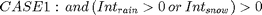
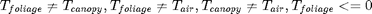
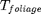
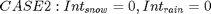
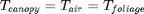

Contents
classdef Canopy<Medium properties
vegetation parameter
rarc;
r0c;
RGL;
Wim;
ref_height;
displacement;
roughness
state variables
W;
intRain;
intSnow;
Tfoliage;
RaC;
nIntRain;
end methods function this=Canopy(vHeatC,initMoist,initTprofile) this=this@Medium(vHeatC,initMoist,initTprofile); end function [error,...
vaporFluxSub,vaporFluxEvapCanopy,vaporFluxTranspir,...%vapor fluxes in (mm)
refreezeEnergy,meltEnergy]=... energy_balance(TfoliageTemp,dt,elevation,Wcr,Wwp,... Tcanopy,... rainfall,snowfall,netShortOver,longOverIn,longUnderOut,LAI,... wind,airDens,press,eActAir,VPD,Le)
Algorithm Description
calculate the energy balance of the foliage layer when there is intercepted or packed snow.
Energy balance is solved WITHIN the FOLIAGE and the boundary of this medium is ONLY the surrounding air of the canopy.


The energy budget MUST be balanced within the foliage medium by adjust .
Only the over portion of radiation is used as input in this circumstance.
if there is intercepted snow, no evapotranspiration but sublimation happens.


There is no energy balance,refreezing or melting process within this medium.
The foliage and snowpack will be treated as one medium to solve the energy balance.
The total radiation is imposed on the foliage medium first to estimate the evapotranspiration.
Then the "error" in the foliage medium will be input to balance of the budget of the snowpack layer.
end end end
Error using Canopy (line 21) Not enough input arguments.